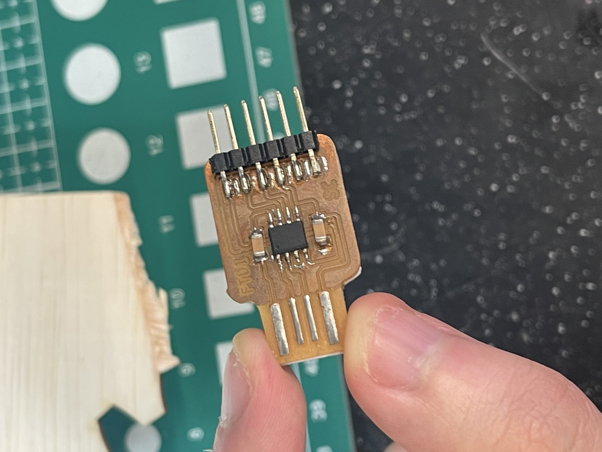

Introduction
This section of the blog talks about what I learnt about PCB production. I learnt about the process of making a PCB. operating a CNC machine, populating a PCB, soldering and testing the PCB.
Electronics Production
Firstly, why do we need to learn about electronic production? Being able to customize your own electronics to meet your product's requirements allows you to have better control over it, allows for greater reliablity and grants you the ability to prototype and iterate faster. This you to customize the footprint of your product allowing for better intergration. There are a multitude of ways to produce a PCB from milling to sewing. For this example, I will be milling the PCB.
Making a FTDI and UPD PCB
| traces | outline |
|---|---|
 |
 |
 |
 |
| The above shows the traces and outlines I used for the production. |
| pictures | examples. |
|---|---|
| Go to the 'Mods' website and select program | |
| Select open server program | |
| choose mil 2D PCB png | |
| Next upload the image of the FTDI traces and select traces. | |
 |
This should be your result |
 |
Next upload the picutre of the outline and select outline, this should be your outline. |
| Now do the same for the UPDI. | |
 |
This should be the result for UPDI traces. |
 |
This should be the result for UPDI outline. |
| This is the CNC machine that I will be using to mill out the PCBs. | |
 |
This is the trace cutter tool bit. It will be used first to cut out the traces of the PCB. This tool bit should be using the second speed setting on the rotary tool. |
 |
This is the outline cutter. There are two cutters the longer ones are meant to cut through hole for vertical pads while the short ones are meant to cut outlines. This tool bit should be using the first speed setting on the rotary tool. |
| This is how my FTDI PCB looks like after I am done milling it. I had to sand it to remove the burs and give it an overall clean look. | |
| Soldering the compoents onto the board | |
| Removing the excess copper covering the USB header to prevent a short. | |
|  | YAAAAA. That is the FTDI done now time for the UPDI. |
| Soldering the componets on the UPDI | |
| This is my final results. I also labelled the different headers on the UPDI so I am able to idenifty which header belongs to which part later on. |
Production Errors
Milling Errors
The image below shows the errors that I encountered while soldering the UPDI. I made an error while soldering the header and decided to use the heat gun to fix it. However, I heated the part for too long causing parts of the traces of the header to come off. Thankfully it was on one of the unused headers.